18 mos – 3 yrs
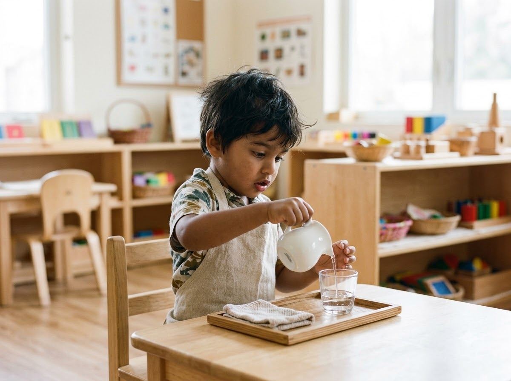
Toddler Programme
A gentle introduction to learning through sensory exploration, movement, simple activities, language development, and social interaction.
A nurturing Montessori environment where children discover, explore, create, and learn at their own pace through meaningful experiences and joyful activities.

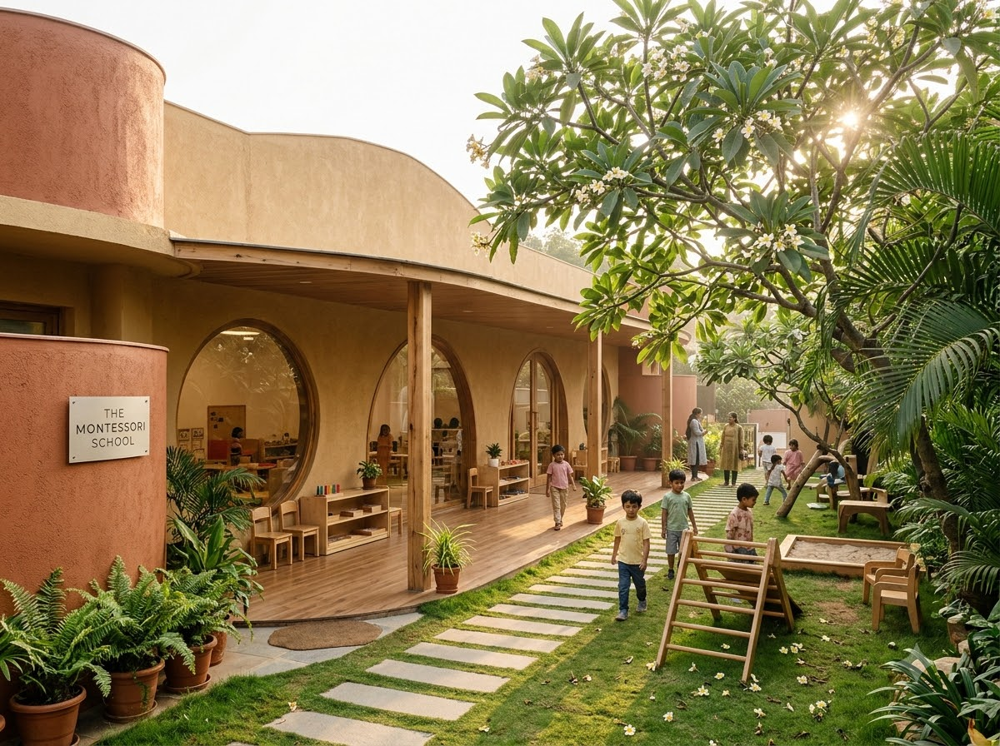
Little Sprouts Montessori is a fictional demonstration school concept inspired by the Montessori approach to early childhood education. We believe that every child is naturally curious, capable, and eager to explore the world. Our learning environment encourages independence, creativity, confidence, and meaningful discovery through hands-on experiences.
To create a nurturing learning environment where children develop independence, curiosity, confidence, and a lifelong love of learning.
To inspire a generation of confident, thoughtful, creative, and compassionate learners.
Discover thoughtfully structured learning experiences that support children's development, independence, and natural curiosity.

A gentle introduction to learning through sensory exploration, movement, simple activities, language development, and social interaction.
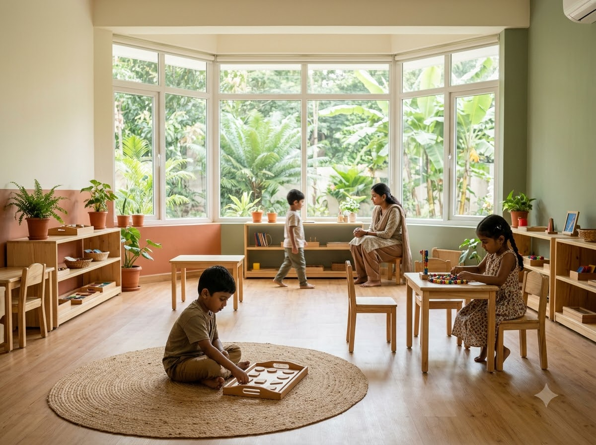
An engaging environment where children explore practical life, sensorial learning, language, mathematics, and cultural activities.
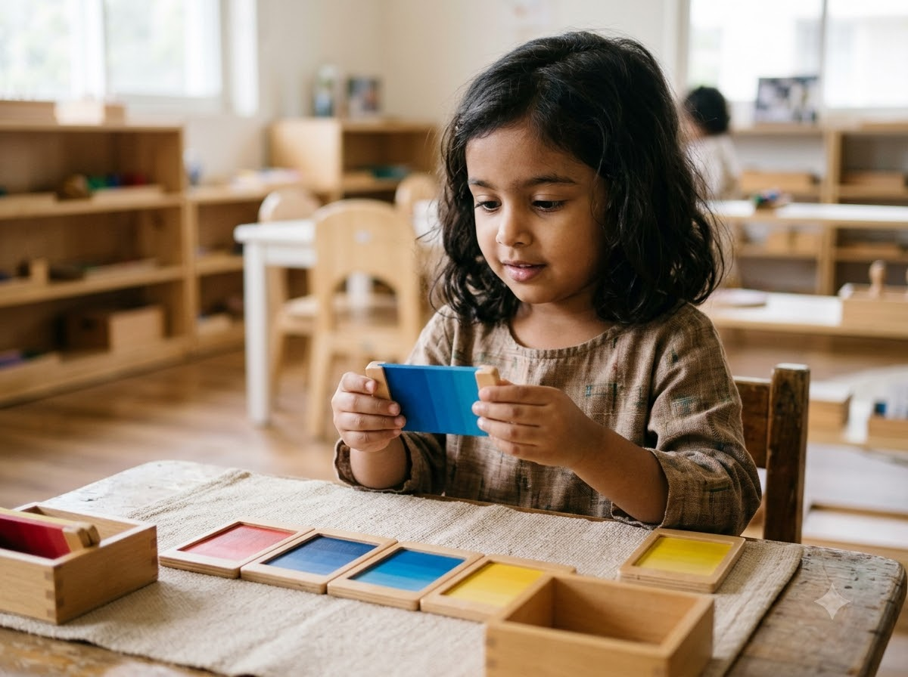
Encouraging foundational skills through interactive activities, creative expression, observation, and hands-on discovery.
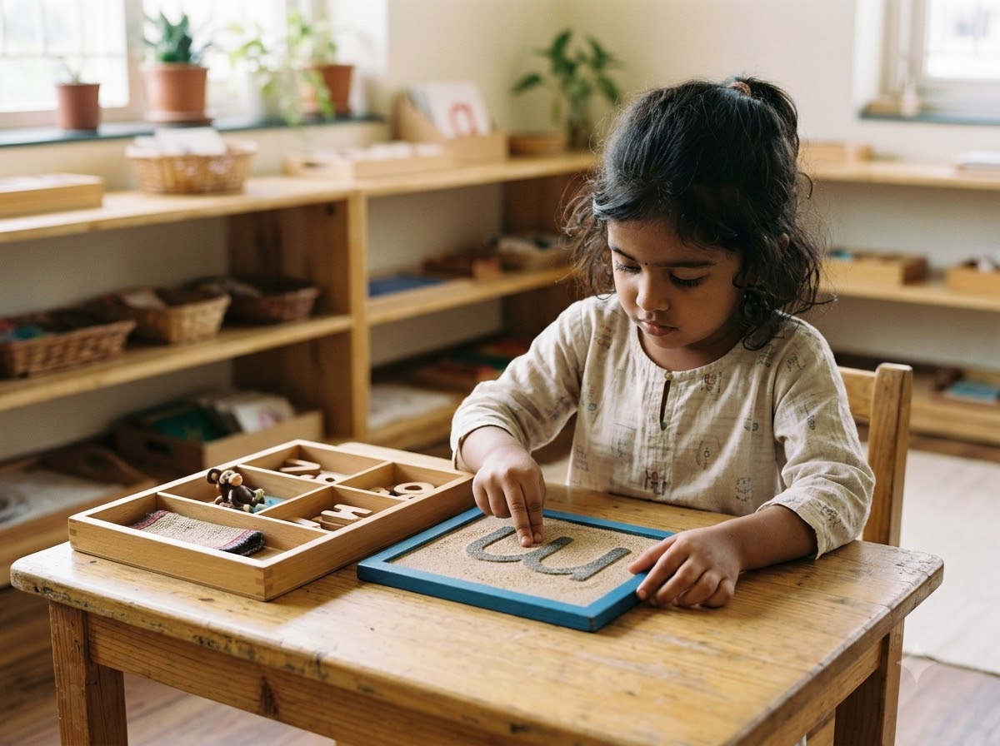
Supporting children's confidence, communication, independence, and foundational learning skills as they prepare for their next educational stage.
The Montessori approach encourages children to learn through hands-on exploration, independent choices, purposeful activities, and a thoughtfully prepared environment.
Children explore everyday activities that encourage coordination, concentration, independence, and responsibility.
Children discover shapes, textures, colors, sounds, and patterns through carefully designed sensory activities.
Children develop communication, vocabulary, listening, early reading, and writing skills through meaningful experiences.
Children explore numbers, counting, quantities, patterns, and foundational mathematical concepts using hands-on materials.
Children are introduced to nature, geography, science, cultures, and the world around them in joyful discovery.
Why families choose our demonstration model for joyful, self-paced, and well-rounded early development.
Encouraging children to explore and learn at their individual pace in a calm, pressure-free atmosphere.
Providing concrete opportunities to learn through practical experiences, tactile materials, and spatial exploration.
Creating a warm, welcoming, and supportive atmosphere where every little learner feels safe, seen, and valued.
Recognizing that every child has different interests, strengths, and developmental timelines that deserve respect.
Encouraging imagination through art, rhythm, music, joyful storytelling, and free open-ended imaginative play.
Supporting social, emotional, physical, and cognitive development in an integrated, wholesome educational framework.

In the Montessori method, the classroom is the "third teacher." Every piece of furniture, shelving unit, and apparatus is scaled precisely for young hands, empowering children to choose, clean, and master their surroundings independently.
Low chairs, lightweight tables, and reachable cubbies designed for self-reliance.
Authentic sensory manipulatives crafted from safe, warm, and natural materials.
Sunlit windows, gentle indoor plants, and calm pastel color schemes.
Quiet soft mats where children immerse themselves in picture books and contemplation.
Nurturing joyful inquiry and creative curiosity through balanced, diverse daily classroom and garden experiences.
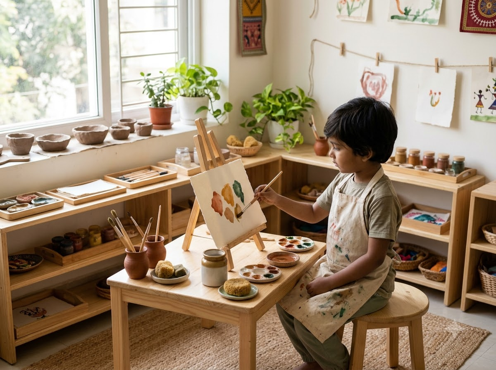
Encouraging imagination through drawing, finger painting, paper folding, and tactile creative projects.
Explore More →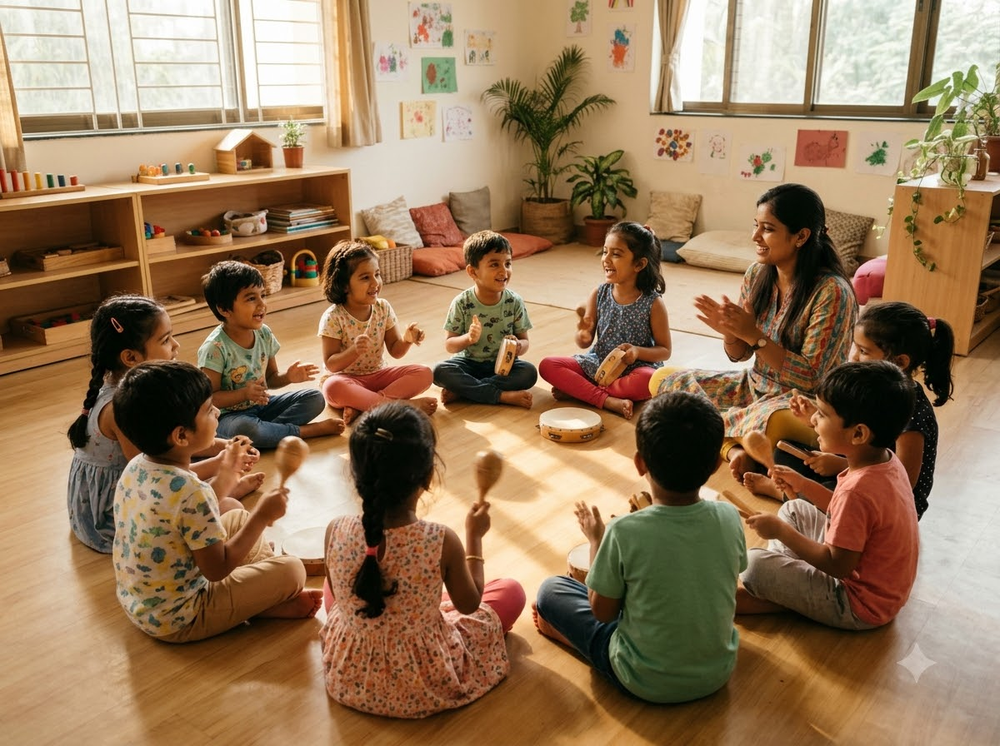
Exploring gentle rhythm, bells, traditional sounds, bodily coordination, and joyous collaborative movement.
Explore More →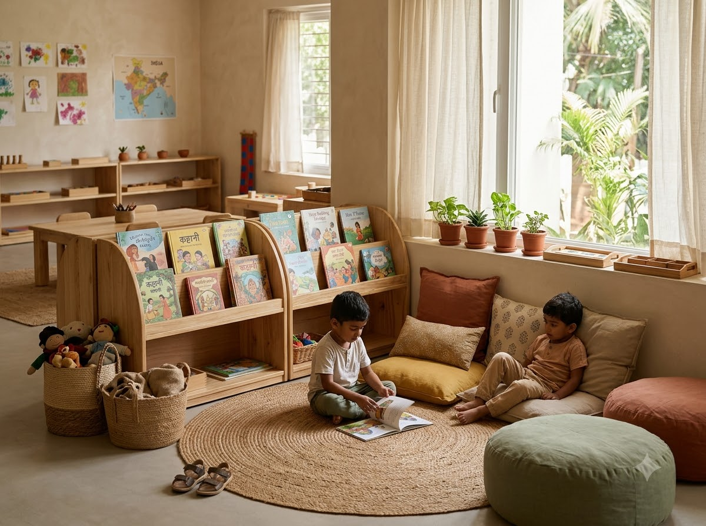
Building boundless imagination, communication, rich vocabulary, and active listening skills in circles.
Explore More →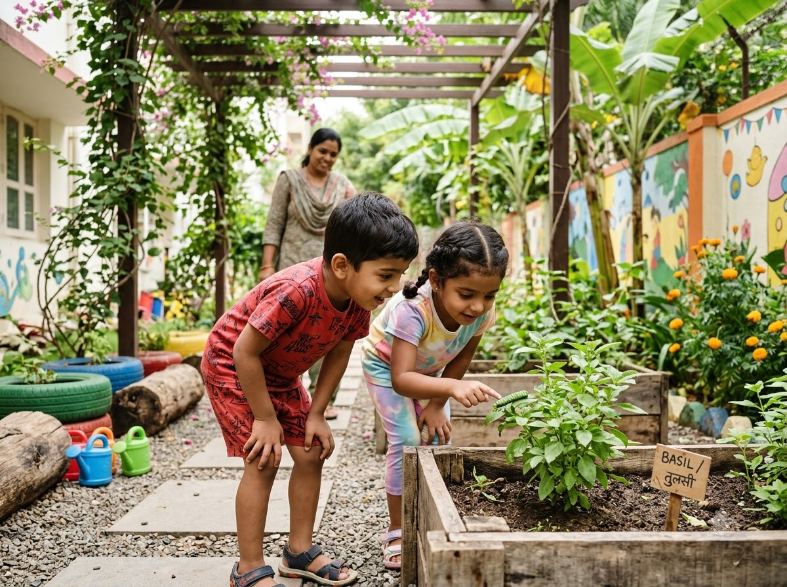
Discovering living plants, soil, garden herbs, weather patterns, and the beauty of the outdoors.
Explore More →
Learning through textures, color grading, pitch cylinders, geometric weights, and natural grains.
Explore More →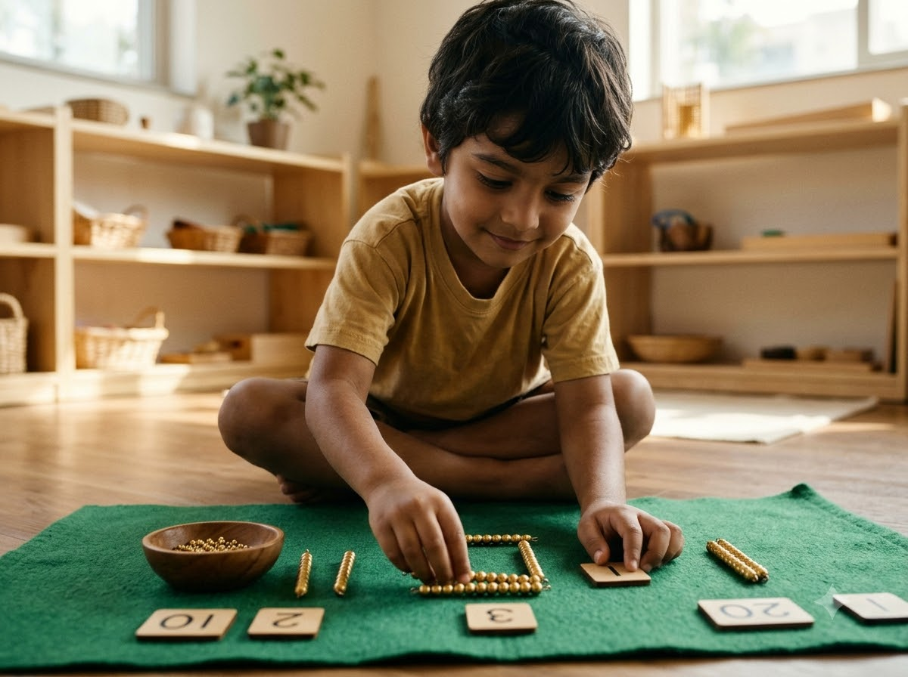
Developing fine motor dexterity and self-esteem through pouring, table setting, buttoning, and sweeping.
Explore More →How our self-directed, respectful educational framework nurtures all fundamental developmental dimensions.
Encouraging observation, self-correction, spatial reasoning, problem-solving, memory, and clear independent thinking.
Nurturing confidence, joyful self-expression, patience, resilience, empathy, and emotional self-regulation.
Supporting fine motor precision, hand-eye coordination, balance, spatial bodily awareness, and outdoor physical vitality.
Our educational concept focuses on creating a prepared environment where children can explore meaningful activities with guidance and encouragement. Rather than lecturing, our teachers observe and present materials matching each child's sensitive periods of development.
Encourage children to make age-appropriate choices, manage their daily tasks, and cultivate organic inner confidence.
Provide opportunities for curiosity, tactile discovery, and hands-on trial without fear of mistake or comparison.
Support self-directed communication, deep responsibility, boundless creativity, and enduring emotional resilience.
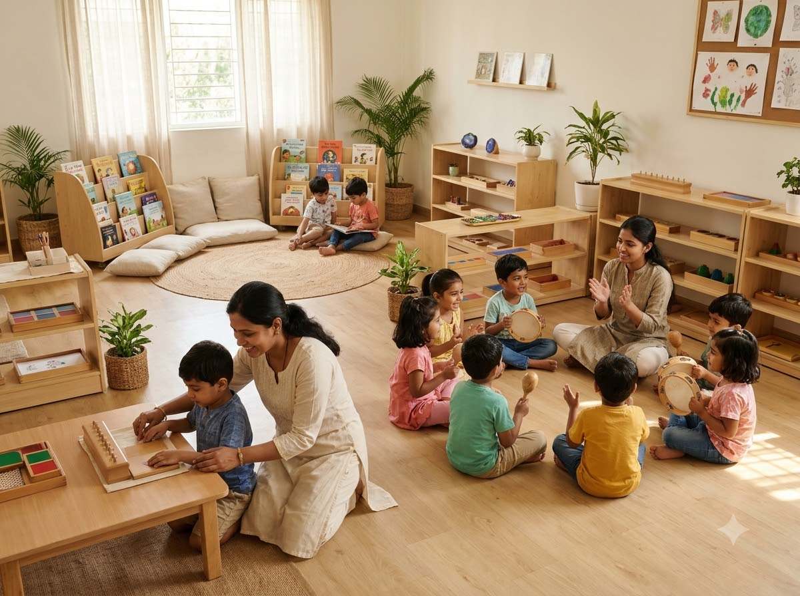
Thoughtfully planned spaces crafted for security, comfort, sensory delight, and developmental hygiene.
Calm, sunlit, and organized learning spaces with curated age-appropriate wooden materials.
A dedicated area for creative movement, theatrical storytelling, and interactive games.
A welcoming sanctuary filled with rich picture books, soft pillows, and early literacy materials.
A safe, climate-friendly space for bodily coordination and supervised indoor fun.
A secured green environment with sand tracks, herb planters, and grassy play mounds.
A vibrant studio for non-toxic watercoloring, clay sculpting, and creative self-expression.
A specialized space for discovering textures, geometric prisms, pitch cylinders, and tints.
Low tables and gentle tableware promoting self-service, hygiene, and social dining grace.
Discover a nurturing learning environment designed to encourage curiosity, confidence, independence, and joyful discovery.
Parents share basic family contact and age details through our sample online enquiry form.
Our team schedules a convenient interactive conversation to learn about your child's habits.
Experience a guided walk through our prepared classrooms and Montessori learning apparatus.
Complete simple registration documentation and share developmental milestones.
Receive confirmation and a gentle orientation kit to welcome your little one warmly.
Explore moments of concentrated focus, cheerful group interactions, and sensory discovery across our campus.
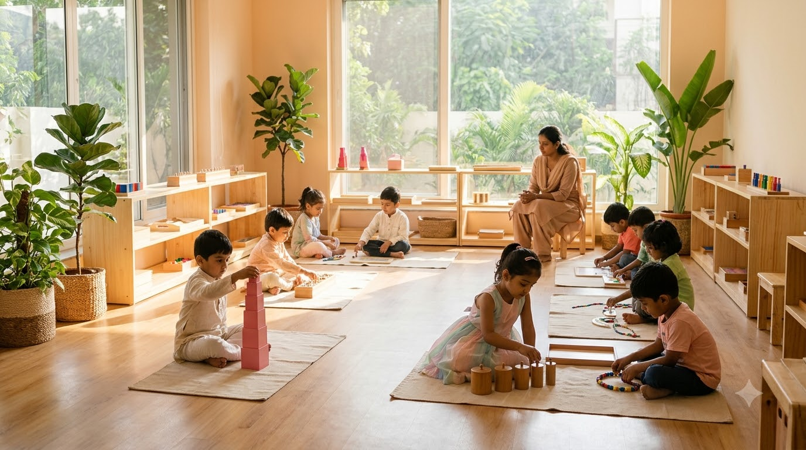

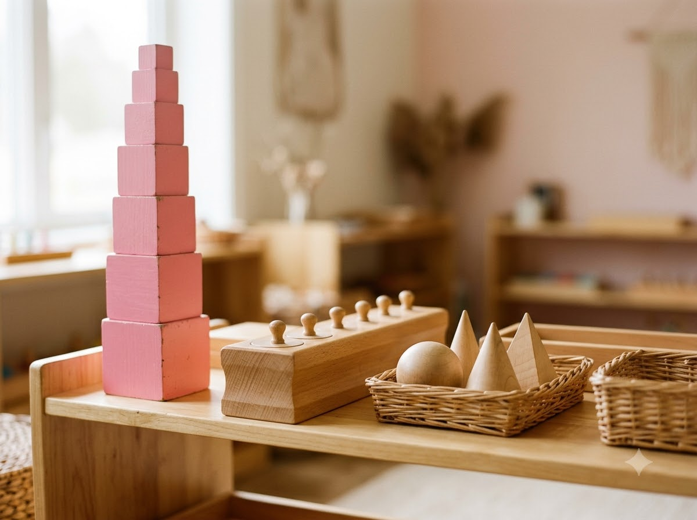


Reflections illustrating how parents appreciate the warmth, independence, and calm of the Montessori philosophy.
"The Montessori learning concept creates a beautiful environment where children can explore, learn, and grow with confidence."
"I love the focus on creativity, independence, and hands-on activities in this educational concept. The child-led pacing is delightful."
"A warm and welcoming approach to early childhood education that celebrates curiosity and discovery without premature academic pressure."
* Disclaimer: All figures above represent fictional demonstration data created strictly for design and presentation purposes.
Essential answers about the Montessori early childhood philosophy and our demonstration campus model.
Have questions about Montessori education or our learning programmes? Send us a message through this demonstration website.
Plot No. 000, Demo Learning Campus, Example Nagar, Hyderabad, Telangana - 500000, India.
+91 99999 00000
demo@example.invalid
Monday – Saturday: 8:00 AM – 4:00 PM
Fill in your details below to test our client-side enquiry submission flow.
Explore a learning environment that encourages curiosity, confidence, independence, and a lifelong love of discovery.